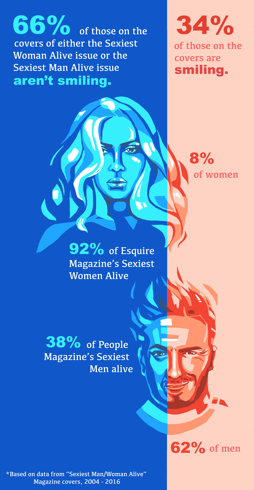
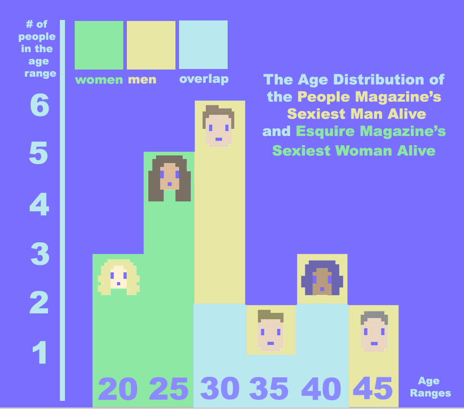

//CODE ALL
#LARGER INDEPENDENT PROJECTS
- 2017 A World Where You're Always Happy: project for my concept studio art class! Uses clmtracker for facial feature tracking / modiciation.
- 2017 - Lightbot + Scratch: Web application that allows students in AP Computer Science Principles to test out their block code in preparation for AP test questions about a robot on a grid. Users drag and drop blocks (move, rotate, repeat loop, if/else, can-move) and watch their block code play out on a grid of modifiable size with custom obstacle locations.
- 2016 - Doodle Date: Online multiuser drawing tool. Users can create or join rooms and draw with their friends on the same canvas. Pen and eraser have custom size, opacity and width options. Doodle date also includes: color wheel, download, import image reference, layers.
#COLLABORATIVE WORK
- 2017 BOT A RAZZI: Final concept studio project; worked in a team of 4. Floating robots follow the user around in this VR experience built for the Google Cardboard using Aframe.js. The robot "view" info is sent to a differnt screen that projects a fake instagram profile with the video stream. I worked on the projections, sending and retriving the data using Firebase. I also 3d modeled some of the models included and built the fake social media pages and their fake chat streams.
- 2017 REMEL: Part of Game Creation Society Club. Game won first at the showcase! I programmed and animated the 4th enemy, the Blob.
- 2017 WEB DEV WEEKEND P5.js TALK: Rain and I gave a talk about p5.js! You can find the slides linked :)
- 2017 BostonHacks team project - Color Controlled VR: We wanted to recreate Cooking Mama in virtual reality but without the use of controllers that make VR more inaccessible. Our "controller " is a colored paper on the back of the user's hand, which is tracked by the library tracking.js! You can try it yourself, but I've linked the devpost which includes a video and a link to the actual live demo.
- 2017 HACKCMU team project - Snow Gum: Cute game to teach children ages 4 - 6 Spanish colors through voice recognition! Thank you Cece and Alyssa!
#DATA VISUALIZATION



December 2017 - Data Visualization of Magazines using Processing- November 2017 - Selection Sort

#JS SKETCHES
- November 2017 - BXA Seminar Project A Natural History of This Thing (I like this one!! :) )
- October 2017 - BXA Seminar Project Experiential Scavenger Hunt
- 11/04/17- Guy Fieri/ Subra Sticker jsfiddle
- 04/07/17- Q-o-METER - compare flickr tag popularity
- 01/17/17 - Kaleidoscope!!! (refresh page for the automatic button to work) *p5.js
- 12/7/16- Poker Porcupine (WORK IN PROGESS!)
- 11/1/16 - Accidentally Hypnotic Ball *p5.js
- 11/1/16 - Breathing Beating Ball *p5.js
- 10/5/16 - Maze Generator *p5.js
- 09/30/16 - Mood Shift Canvas (my first p5 program!) *p5.js
- 07/16- Avoiding Dogs
- 07/16- Running Dog
#JAVA
- 9/5/16 - GUI Color Mixer - has checkboxes so the user can choose the color, then repaints with a background made of the chosen color and variations of them.